전자계산기조직응용기사 (2013-08-18 기출문제)
1과목: 전자계산기 프로그래밍
1. C 언어의 특징으로 옳은 내용 모두를 나열한 것은?
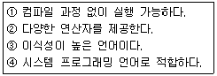
- ①, ③
- ①, ②, ③
- ①, ②, ④
- ②, ③, ④
(정답률: 81%)

2. 객체지향 기법 중 데이터와 데이터를 처리하는 함수를 하나로 묶는 것을 의미하며, 객체의 세부 내용이 외부에 은폐되어 변경이 발생할 때 오류의 파급 효과가 적은 것은?
- 클래스
- 메시지
- 상속성
- 캡슐화
(정답률: 79%)
3. 객체지향 설계 방법론에 대한 설명으로 옳지 않은 것은?
- 구체적인 절차를 표현한다.
- 객체의 속성과 자료구조를 표현한다.
- 형식적인 전략으로 기술한다.
- 서브클래스와 메시지 특성을 세분화하여 세부사항을 정제화한다.
(정답률: 64%)
4. 원시프로그램을 번역할 때 어셈블러에게 요구되는 동작을 지시하는 명령으로서 기계어로 번역되지 않는 명령어를 무엇이라고 하는가?
- 매크로명령(macro instruction)
- 기계어 명령(machine instruction)
- 의사 명령(pseudo instruction)
- 오퍼랜드 명령(operand instruction)
(정답률: 80%)
5. 주어진 BNF를 이용하여 그 대상을 근으로 하고 터미널 노드들이 검정하고자 하는 표현식과 같이 되는 트리를 무엇이라고 하는가?
- sweked tree
- binary tree
- parse tree
- circle tree
(정답률: 79%)
6. 어셈블리어에서 서브루틴을 호출하는 명령은?
- LOOP
- JMP
- CALL
- LOOPE
(정답률: 71%)
7. 어셈블리어에서 매크로를 정의할 대 시작부분과 끝부분에 쓰이는 명령은?
- BEGIN, END
- MACRO, ENDM
- MOPEN, ENDM
- START, END
(정답률: 63%)
8. C 언어에서 이스케이프 시퀀스의 설명이 옳지 않은 것은?
- ＼t : tab
- ＼r : rollback
- ＼f : form feed
- ＼b : backspace
(정답률: 70%)
9. C 언어의 기억클래스 종류가 아닌 것은?
- Dynamic
- External
- Static
- Register
(정답률: 74%)
10. C 언어에서 함수 “putchar()”의 역할은?
- 한 개의 문자를 출력하는 함수이다.
- 한 개의 문자를 입력하는 함수이다.
- 문자열을 입력하는 함수이다.
- 인수의 내용을 지정된 형식문자열에 의하여 입력형식을 갖추는 함수이다.
(정답률: 75%)
11. C 언어에서 키보드로부터 하나의 문자를 입력받는 함수는?
- getchar()
- putchar()
- scanf()
- main()
(정답률: 73%)
12. 프로그램 수행 순서로 옳은 것은?
- 원시프로그램→목적프로그램→컴파일러→링커→로더
- 목적프로그램→링커→원시프로그램→컴파일러→로더
- 원시프로그램→컴파일러→목적프로그램→링커→로더
- 목적프로그램→컴파일러→원시프로그램→링커→로더
(정답률: 65%)
13. 객체지향 기법에서 객체에게 어떤 행위를 하도록 지시하는 명령을 무엇이라고 하는가?
- Method
- Package
- Message
- Module
(정답률: 80%)
14. 객체지향 개념 중 하나 이상의 유사한 객체들을 묶어 공통된 특성을 표현한 데이터 추상화를 의미하는 것은?
- Method
- Class
- Inheritance
- Abstraction
(정답률: 80%)
15. 고급언어로 작성한 프로그램을 기계어로 번역하였다. 번역 중에 발생한 문법에러를 모두 수정하여 실행 파일을 만들었으나 실행 결과가 정확하지 않았다. 다음 중 어떤 프로그램을 이용하면 논리적인 문제점을 검토할 수 있는가?
- 운영체제(operating system)
- 링커(linker)
- 디버거(debugger)
- 편집기(editor)
(정답률: 82%)
16. 수명 시간동안 고정된 하나의 값과 이름을 가진 자료로서 프로그램이 작동하는 동안 값이 절대로 바뀌지 않는 것을 의미하는 것은?
- 변수
- 포인터
- 상수
- 함수
(정답률: 78%)
17. 객체지향 프로그래밍 기법에 대한 설명으로 옳지 않은 것은?
- 객체지향 프로그래밍 언어에는 Smalltalk, C＋＋ 등이 있다.
- 설계시 자료와 자료에 가해지는 프로세스를 묶어 정의하고 관계를 규명한다.
- 절차 중심 프로그래밍 기법이다.
- 새로운 개념의 모듈 단위, 즉 객체란ㄴ 단위를 중심으로 프로그램을 개발하는 기법이다.
(정답률: 73%)
18. 어셈블리어에서 라이브러리에 기억된 내용을 프로시저로 정의하여 서브루틴으로 사용하는 것과 같이 사용할 수 있도록 그 내용을 현재의 프로그램 내에 포함시켜 주는 명령은?
- SEGMENT
- INCLUDE
- ORG
- EXTRN
(정답률: 74%)
19. 람바우의 객체 모델링 비법에서 사용하는 세 가지 모델링이 아닌 것은?
- 객체 모델링
- 정적 모델링
- 동적 모델링
- 기능 모델링
(정답률: 74%)
20. C 언어에서 사용하는 데이터형이 아닌 것은?
- character
- int
- float
- short
(정답률: 72%)
2과목: 자료구조 및 데이터통신
21. DBMS의 필수 기능에 해당하는 것은?
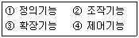
- ①, ②, ③
- ①, ②, ④
- ①, ③, ④
- ②, ③, ④
(정답률: 79%)
22. 3단계 데이터베이스 구조의 스키마 종류에 해당하지 않는 것은?
- 외부 스키마
- 개념 스키마
- 내부 스키마
- 관계 스키마
(정답률: 74%)
23. 선형 자료구조에 해당하는 것으로 나열된 것은?
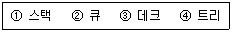
- ①, ④
- ①, ②, ③
- ①, ②, ④
- ①, ②, ③, ④
(정답률: 76%)
24. 해싱에서 동일한 버켓 주소를 갖는 레코드들의 집합을 의미하는 것은?
- synonym
- collision
- slot
- bucket
(정답률: 59%)
25. 트랜잭션의 특성에 해당하지 않는 것은?
- Integrity
- Atomicity
- Consistency
- Durability
(정답률: 65%)
26. 데이터베이스 설계 순서로 옳은 것은?
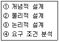
- ①→③→②→④
- ③→②→④→①
- ②→④→①→③
- ④→①→③→②
(정답률: 78%)
27. 데이터베이스의 특징으로 옳지 않은 것은?
- 실시간 접근성(Real-Time Accessibility)
- 계속적인 변화(Continuous Evolution)
- 주소에 의한 참조(Location Reference)
- 동시 공용(Concurrent Sharing)
(정답률: 69%)
28. 다음 자료에 대하여 버블 정렬을 사용하여 오름차순 정렬할 경우 2회전 후의 결과는?
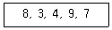
- 3, 4, 8, 7, 9
- 3, 8, 4, 9, 7
- 3, 4, 8, 9, 7
- 3, 4, 7, 8, 9
(정답률: 52%)
29. 스택에 대한 설명으로 옳은 내용 모두를 나열한 것은?
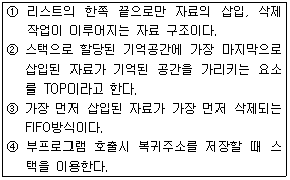
- ①, ②
- ①, ②, ③
- ①, ②, ④
- ①, ③, ④
(정답률: 69%)
30. 다음과 같은 이진트리의 Preorder 운행 결과는?
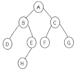
- A B D E H C F G
- A B C D E F G H
- A H E B F G C D
- D B H E A F C G
(정답률: 77%)
31. 다음 중 ASK, FSK, PSK와 같이 세 가지 방식이 있으며, 디지털 변조에서 디지털 데이터를 아날로그 신호로 변환시키는 것을 의미하는 것은?
- Carrier
- Manchester
- Keying
- Converter
(정답률: 64%)
32. 데이터 프레임을 연속적으로 전송해 나가다가 NAK를 수신하게 되면, 오류가 발생한 프레임 이후에 전송된 모든 데이터 프레임을 재전송하는 방식은?
- Stop-and-wait
- Stop-and-wait ARQ
- Go-back-N ARQ
- ARQ(automatic repeat request)
(정답률: 77%)
33. 다음 중 DTE에서 출려되는 디지털 신호를 디지털 회선망에 적합한 신호형식으로 변환하는 장치로 옳은 것은?
- MODEM
- CCU
- DCS
- DSU
(정답률: 37%)
34. 다음 중 효율적인 전송을 위해 넓은 대역폭(고속 전송속도)을 가진 하나의 전송 링크를 통하여 여러 신호(데이터)를 동시에 실어 보내는 전송기술은?
- 다중화
- 부호화
- 양자화
- 압축화
(정답률: 70%)
35. 송수신측 간의 전송 경로 중 최적의 패킷 교환 경료를 설정하는 기능인 경로의 설정 요소로 틀린 것은?
- 성능 기준
- 정보 도착지
- 경로 결정 장소
- 경로 배정 갱신 시간
(정답률: 35%)
36. 회선교환 방식에 대한 설명으로 틀린 것은?
- 송신스테이션과 수신스테이션 사이에 데이터를 전송하기 전에 먼저 교환기를 통해 물리적으로 영결이 이루어 져야 한다.
- 현재 널리 사용되고 있는 전화시스템이 이에 해당된다.
- 가변길이의 메시지 단위로 저장-전달(store and forward) 방식에 의해 데이터를 교환한다.
- 정보 전송이 완료되면, 호 해제를 통하여 점유되었던 회선을 내어 놓음으로써 다른 통신을 위해 사용될 수 있도록 한다.
(정답률: 60%)
37. ATM(Asynchronous Transfer Mode)에 사용되는 ATM cell의 헤더와 유료 부하(payload)의 크기는 각각 몇 옥텟(octet)인가?
- 헤더는 2옥텟, 유료부하는 47옥텟이다.
- 헤더는 3옥텟, 유료부하는 47옥텟이다.
- 헤더는 4옥텟, 유료부하는 48옥텟이다.
- 헤더는 5옥텟, 유료부하는 48옥텟이다.
(정답률: 57%)
38. TCP/IP 모델의 인터넷 계층에 해당하는 프로토콜로 맞는 것은?
- HTTP
- ARP
- UDP
- SMTP
(정답률: 36%)
39. HDLC 구조에서 프레임의 시작과 끝을 나타내며 고유한 비트 패턴으로 표시되는 것은?
- 정보영역
- 제어영역
- 주소영역
- 플래그
(정답률: 60%)
40. 동기식 문자 지향 프로토콜 프레임에서 전송될 문자의 시작을 나타내는 제어 문자는?
- DLE
- STX
- CRC
- SYN
(정답률: 59%)
3과목: 전자계산기구조
41. 전기산기(full-adder)의 carry 비트를 논리식으로 나타낸 것은? (단, x, y, z는 입력, C(carry)는 출력)
- C = x ⊕ y ⊕ z
- C = x'y + x'z + yz
- C = xy + (x⊕y)z
- C = xyz
(정답률: 30%)
42. BCD 코드 1001에 대한 해밍 코드를 구하면?
- 0011001
- 1000011
- 0100101
- 0110010
(정답률: 52%)
43. 다음 중 OP-code의 기능이 아닌 것은?
- 주소지정
- 함수연산
- 전달
- 제어
(정답률: 31%)
44. 재귀호출(recursive call) 프로그램에 해당하는 것은?
- 한 루틴(routine)이 반복될 때
- 한 루틴(routine)이 자기를 다시 호출할 때
- 다른 루틴(routine)이 다른 루틴을 호출할 때
- 한 루틴(routine)에서 다른 루틴으로 갈 때
(정답률: 72%)
45. 캐시(cache) 기억장치에 대한 설명으로 가장 옳은 것은?
- 중앙처리장치와 주기억장치의 정보교환을 위해 임시 보관하는 장치이다.
- 중앙처리장치의 속도와 주기억장치의 속도를 가능한 같도록 하기 위한 장치이다.
- 캐시와 주기억장치 사이에 정보 교환을 위하여 임시 저장하는 장치이다.
- 캐시와 주기억장치의 속도를 같도록 하기 위한 장치이다.
(정답률: 53%)
46. 마이크로 오퍼레이션에 대한 설명 중 옳은 것은?
- 레지스터 전달 명령은 마이크로 오퍼레이션을 기술할 수 없다.
- 마이크로 오퍼레이션 수행을 위해서 제어 함수는 필요 없다.
- 마이크로 오퍼레이션은 1클록 동안에 수행된다.
- 마이크로 오퍼레이션 실행에서 워드 타임과 비트타임은 같아야만 한다.
(정답률: 63%)
47. 다음은 0-주소 명령어 방식으로 이루어진 프로그램이다. 레지스터 X의 내용은? (단, 레지스터 A = 1, B = 2, C = 3, D = 3, E = 2이며, ADD는 덧셈 명령어, MUL은 곱셈 명령어이다.)
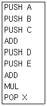
- 15
- 20
- 25
- 30
(정답률: 37%)
48. 1-주소 명령어에서는 무엇을 이용하여 명령어 처리를 하는가?
- 누산기
- 가산기
- 스택
- 프로그램카운터
(정답률: 60%)
49. 동일한 컴퓨터에서 처리할 경우 연산속도가 가장 빠른 것은?
- K = B/C
- K = B*C
- K = A-B
- K = A+B
(정답률: 55%)
50. 정수 n bit를 사용하여 1의 보수(1's complement)로 표현하였을 때 그 값의 범위는?
- -(2n-1-1) ~ 2n-1-1
- -2n-1 ~ 2n-1-1
- -2n ~ 2n-1-1
- -2n-1 ~ 2n-1-1
(정답률: 55%)
51. 가상기억장치(Virtual Memory System)를 도입함으로써 기대할 수 있는 장점이 아닌 것은?
- Binding Time을 늦추어서 프로그램의 Relocation을 용이하게 쓴다.
- 일반적으로 가상기억장치를 채택하지 않는 시스템에서의 실행 속도보다 빠르다.
- 실제 기억용량보다 큰 가상공간(Virtual Space)을 사용자가 쓸 수 있다.
- 오버레이(Overlay) 문제가 자동적으로 해결된다.
(정답률: 44%)
52. 다음은 DMA와 인터럽트에 대한 설명이다. 잘못 설명된 것은?
- DMA는 기억장치와 주변장치 사이에 직접적인 자료전송을 제공한다.
- 대량의 자료 전송시 인터럽트 방법은 중앙처리기의 부담을 증가시킨다.
- DMA는 주기억장치에 접근하기 위해 cycle stealing을 한다.
- DMA과정에서 중앙처리장치가 DMA제어기를 초기화할 때 인터럽트가 발생한다.
(정답률: 40%)
53. shift 명령을 수행한 후 빈 공간에 채워지는 내용이 다른 것은?
- 왼쪽으로 논리 shift한 결과
- 오른쪽으로 논리 shift한 결과
- 2의 보수법으로 왼쪽으로 산술 shift한 결과
- 오른쪽으로 산술 shift한 결과
(정답률: 44%)
54. 명령어의 주소(address) 부를 유효주소로 이용하는 방법은?
- 상대 주소
- 즉시 주소
- 절대 주소
- 직접 주소
(정답률: 34%)
55. 다음의 마이크로 오퍼레이션과 관련 있는 것은?
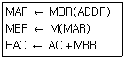
- AND
- ADD
- JMP
- BSA
(정답률: 57%)
56. 통상적인 사용자 프로그램을 처리함에 있어서 중앙처리장치(CPU)가 가장 많이 실행하는 인스트럭션 종류는?
- 주기억장치와의 자료전달(load, store)
- 수치적 및 논리적 연산(arithmetic, logical)
- 입출력(input, output)
- 조건 및 무조건 분기(branch)
(정답률: 52%)
57. 다중처리기 상호 연결 방법 중 시분할 공유버스를 설명한 것은?
- 시분할 공유와 기타방법의 혼합
- Multiprocessor를 비교적 경제적인 망으로 구성
- 공유버스 시스템에서 버스의 수를 기억장치의 수만큼 증가시킨 구조
- 프로세서, 기억장치, 입출력 장치들 간에 하나의 버스 통신로만을 제공하는 방법
(정답률: 28%)
58. 하나의 채널에 저속의 많은 입출력 장치를 구동시키는데 알맞은 방식으로 각 입출력 장치마다 채널을 시분할 공유하도록 하여 여러 개의 입출력 장치를 동작시킬 수 있는 채널은?
- 실렉터 채널
- 비트 멀티플렉서 채널
- 바이트 멀티플렉서 채널
- 블록 멀티플렉서 채널
(정답률: 42%)
59. 파이프라인 프로세서(Pipeline processor)의 설명 중 가장 적합한 것은?
- 2개 이상의 명령어를 동시에 수행할 수 있는 프로세서
- Micro program에 의한 프로세서
- Bubble memory로 구성된 프로세서
- Control memory가 분리된 프로세서
(정답률: 53%)
60. 2의 보수로 표현되는 수가 A, B 레지스터에 저장되어 있다. A ← A-B 연산을 수행한 후의 A 레지스터는?
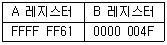
- 00000012
- FFFFFF12
- 000000B0
- FFFFFFB0
(정답률: 55%)
4과목: 운영체제
61. 프로세스의 정의로 옳은 내용 모두를 나열한 것은?
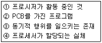
- ①, ②
- ①, ④
- ①, ②, ④
- ①, ②, ③, ④
(정답률: 65%)
62. UNIX에서 커널의 수행 기능에 해당하는 것으로만 나열된 것은?
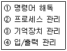
- ①, ③
- ①, ②, ④
- ②, ③ , ④
- ①, ②, ③, ④
(정답률: 63%)
63. 현재 헤드 위치가 53에 있고 트랙 0번 방향으로 이동 중이었다. 요청 대기 큐에는 다음과 같은 순서의 액세스 요청이 대기 중일 때 SSTF 스케줄링 알고리즘을 사용한다면 가장 마지막에 처리되는 것은? (단, 가장 안쪽 트랙은 0번)
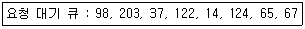
- 14
- 67
- 98
- 203
(정답률: 49%)
64. FIF0 스케줄링에서 3개의 작업 도착시간과 CPU 사용시간(burst time)이 다음 표와 같다. 이 때 모든 작업들의 평균 반환시간(turn around time)은?
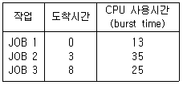
- 16
- 20
- 33
- 41
(정답률: 50%)
65. 하나의 프로세스가 작업 수행 과정에서 수행하는 기억 장치 접근에서 지나치게 페이지 폴트가 발생하여 프로세스 수행에 소요되는 시간보다 페이지 이동에 소요되는 시간이 더 커지는 현상은?
- 스레싱(Thrashing)
- 워킹 셋(Working set)
- 교환(Swapping)
- 세마포어(Semaphore)
(정답률: 66%)
66. 주기억장치 배치 전략 기법으로 최적 적합 방법을 사용한다고 할 때, 다음과 같은 기억장소 리스트에서17k 크기의 작업은 어느 기억공간에 할당되는가? (단, 탐색은 위에서 아래로 한다.)
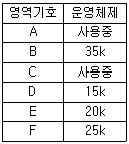
- B
- D
- E
- F
(정답률: 74%)
67. 운영체제의 수행 기능으로 옳은 내용 모두를 나열한 것은?
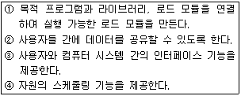
- ①, ②
- ①, ③, ④
- ②, ③, ④
- ①, ②, ③, ④
(정답률: 35%)
68. 3개의 페이지 프레임(Frame)을 가진 기억장치에서 페이지 요청을 다음과 같은 페이지 번호 순으로 요청했을 때 교체 알고리즘으로 FIF0 방법을 사용한다면 몇 번의 페이지 부재(Fault)가 발생하는가? (단, 현재 기억장치는 모두 비어 있다고 가정한다.)
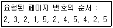
- 5번
- 6번
- 7번
- 8번
(정답률: 44%)
69. 다음 설명에 해당하는 디렉토리 구조는?
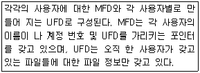
- 트리 디렉토리 구조
- 일반적인 그래프 디렉토리 구조
- 비순환 그래프 디렉토리 구조
- 2단계 디렉토리 구조
(정답률: 45%)
70. 로더(Loader)의 종류 중 로더의 역할이 축소되어 가장 간단한 프로그램으로 구성된 로더로서, 기억장소 할당이나 연결을 프로그래머가 직접 지정하는 방식이며 프로그래머 입장에서는 매우 어렵고 한번 지정한 주기억장소의 위치는 변경이 힘들다는 단점이 있는 것은?
- Relocating Loader
- Dynamic Loading Loader
- Absolute Loader
- Overlay Loader
(정답률: 56%)
71. 파일 디스크립터(File Descriptor)의 내용으로 거리가 먼 것은?
- 파일 수정 시간
- 파일의 이름
- 파일에 대한 접근 횟수
- 파일 오류 처리 방법
(정답률: 40%)
72. UNIX에서 파일 내용을 화면에 표시하는 명령과 파일의 소유자를 변경하는 명령을 순서적으로 옳게 나열한 것은?
- dup, mkfs
- cat, chown
- type, chmod
- type, cat
(정답률: 63%)
73. 운영체제의 운영 기법 중 동시에 프로그램을 수행할 수 있는 CPU를 두 개 이상 두고 각각 그 업무를 분담하여 처리할 수 있는 방식을 의미하는 것은?
- Multi-Processing System
- Time-Sharing System
- Real-Time System
- Multi-Programming System
(정답률: 53%)
74. HRN 방식으로 스케줄링 할 경우, 입력된 작업이 다음과 같을 때 우선순위가 가장 높은 것은?
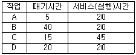
- A
- B
- C
- D
(정답률: 60%)
75. UNIX의 특징으로 옳은 내용 모두를 나열한 것은?
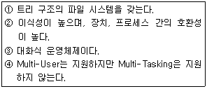
- ①, ③
- ①, ②, ③
- ①, ③, ④
- ①, ②, ③, ④
(정답률: 62%)
76. 매크로 프로세서 처리과정으로 옳은 것은?
- 매크로 정의 인식→매크로 호출 인식→매크로 정의 저장→매크로 확장과 인수치환
- 매크로 정의 인식→매크로 정의 저장→매크로 호출 인식→매크로 확장과 인수치환
- 매크로 호출 인식→매크로 정의 저장→매크로 정의 인식→매크로 확장과 인수치환
- 매크로 정의 저장→매크로 정의 인식→매크로 호출 저장→매크로 확장과 인수치환
(정답률: 55%)
77. 레코드가 직접 액세스 기억장치의 물리적 주소를 통해 직접 액세스 되는 파일 구조는?
- Sequential File
- Indexed Sequential File
- Direct File
- Partitioned File
(정답률: 61%)
78. 하이퍼큐브에서 하나의 프로세서에 연결되는 다른 프로세서의 수가 4개일 경우 필요한 총 프로세서의 수는?
- 4
- 8
- 16
- 32
(정답률: 65%)
79. 구역성(Locality)에 대한 설명으로 옳지 않은 것은?
- Denning에 의해 증명된 이론을 어떤 프로그램의 참조 영역은 지역화 된다는 것이다,
- 워킹 셋(Working Set) 이론의 바탕이 되었다.
- 시간 구역성은 어떤 프로세스가 최근에 참조한 기억 장소의 특정 부분은 그 후에도 계속 참조할 가능성이 높음을 의미한다,
- 부 프로그램이나 서브루틴, 순환 구조를 가진 루틴, 스택 등의 프로그램 구조나 자료 구조는 공간 구역성의 특성을 갖는다.
(정답률: 45%)
80. 다중 처리기 운영체제 구성에서 주/종(Master/Slave)처리기 시스템에 대한 설명으로 옳지 않은 것은?
- 주프로세서는 입/출력과 연산을 담당한다.
- 종프로세서는 입/출력 위주의 작업을 처리한다.
- 주프로세서만이 운영체제를 수행한다.
- 주프로세서에 문제가 발생하면 전체 시스템이 멈춘다.
(정답률: 52%)
5과목: 마이크로 전자계산기
81. 비동기식 직렬 통신을 하며 9600bps 속도를 전송하는데 소요되는 시간은? (단, start 비트 : 2비트, stop 비트 : 1비트)
- 0.25.
- 0.5ms
- 1.25ms
- 9.6ms
(정답률: 66%)
82. 마이크로프로세서의 발전과정상 16비트 컴퓨터의 특징으로 틀린 것은?
- 데이터 버스가 16비틀 확정되었다.
- 논리적 메모리 용량한계를 극복하기 위하여 가상메모리 기법을 도입하였다.
- 멀티태스킹 지원이 가능하게 되었다.
- co-processor를 장착하여 연산기능을 향상시켰다.
(정답률: 43%)
83. Dynamic RAM에서 Address 선을
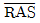
와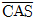
에 의해 2배의 address bus로 대응시키기 위해 필요한 논리회로는?- Multiplexer
- Demultiplexer
- Decoder
- Encoder
(정답률: 60%)
84. 다음 중 ICE(In-Circuit Emulator)의 기능으로 볼 수 없는 것은?
- 임의의 어드레스로 실행을 정지시키는 브레이크 포인트 기능
- 프로그램의 특정 명령을 실행할 때마다 지정된 메모리의 내용을 출력하는 싱글스텝 기능
- 역어셈블 기능
- 크로스컴파일 기능
(정답률: 42%)
85. 주루틴(main routine)의 호출명령에 의하여 명령실행제어만이 넘겨져서 고유의 루틴(routine)처리를 행하도록 하는 것은?
- 열린 서브루틴(open subroutine)
- 폐쇄 서브루틴(closed subroutine)
- 매크로(macro)
- 벡터(vector)
(정답률: 64%)
86. 다음 중 스택과 관계없는 것은?
- 서브루틴 수행
- 역표기법(Reverse polish)을 이용한 수식 계산
- LIFO 구조
- ALU
(정답률: 65%)
87. 범용 직렬 통신 장치인 8251에 대한 설명으로 틀린 것은?
- 양방향 통신을 하기 위하여 더블 버퍼로 구성되어 있다.
- 전송 버퍼, 수신 버퍼가 있다.
- 동기식 전송만 가능하다.
- 전송 속도는 DC에서 최대 64Kbps까지 가능하다.
(정답률: 70%)
88. [그림]은 ROM의 기본구성도이다. Ⓐ 부분의 기능에 대한 명칭은?
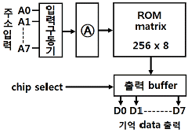
- decoder
- shift register
- address buffer
- encoder
(정답률: 70%)
89. 어떤 RAM 모듈의 액세스 시간이 100ns이고, 한 번에 32bit씩 읽혀질 때 데이터 전송률[Mbps]은?
- 32
- 100
- 320
- 3200
(정답률: 49%)
90. 고정배선제어에 비해 마이크로프로그램을 이용한 제어방식이 가지는 장점이 아닌 것은?
- 변경 가능한 제어기억소자를 사용하여 제어의 변경이 가능하다.
- 동작 속도를 극대화 할 수 있다.
- 제어 논리의 설계를 프로그램 작업으로 수행할 수 있다.
- 개발기간을 단축시킬 수 있고 에러에 대한 진단 및 수정이 쉽다.
(정답률: 56%)
91. 메모리나 입출력 장치로부터 마이크로프로세서로 데이터를 읽어오기 위한 제어 신호는? (단, z80 마이크로프로세서 기준)
- /M1
- /RO
- /MREQ
- /WR
(정답률: 43%)
92. 마이크로컴퓨터와 주변장치와의 데이터 전달 방식이 아닌 것은?
- 루프 입출력(loop I/O)
- DMA(direct memory access)
- 인터럽트 입출력(interrupt I??O)
- 프로그램 입출력(programmed I/O)
(정답률: 66%)
93. Femto second의 단위는?
- 10-9
- 10-12
- 10-15
- 10-19
(정답률: 57%)
94. 어떤 마이크로컴퓨터 시스템의 버스 사이클과 DMA 전송을 버스트(burst) 방식으로 실행할 경우 10바이트 데이터를 고속 I/O 주변장치의 DMA 전송 시 몇 번의 시스템 버스이양 요청과 양도가 이루어지는가? (단, 이양 요청과 양도를 합하여 1회로 본다.)
- 1회
- 2회
- 10회
- 20회
(정답률: 67%)
95. 직렬 통신 속도를 결정해 주기 위한 클록을 공급하는 것은?
- 병렬-직렬 변환기
- 보 레이트 공급기
- 카운트 타이머 회로
- DMA
(정답률: 67%)
96. I/O 장치 자체를 기억장치의 일부로 취급하는 것은?
- isolaed I/O
- memory-mapped I/O
- direct memory I/O
- user-initiated I/O
(정답률: 56%)
97. micro-cycle의 동기 가변식(synchronous variable)에 대한 설명으로 옳은 것은?
- 모든 마이크로 오퍼레이션 중 가장 짧은 것을 마이크로 cycle time으로 한다.
- 모든 마이크로 오퍼레이션 중 가장 긴 것을 마이크로 cycle time으로 한다.
- 마이크로 오퍼레이션의 수행시간 차이가 클 때 사용되는 방식이다.
- 제어가 간단하다.
(정답률: 54%)
98. 다음 중 UART가 수행할 수 있는 동작이 아닌 것은?
- 키보드나 마우스로부터 들어오는 인터럽트를 처리한다.
- 외부 전송을 위해 패리티 비트를 추가한다.
- 데이터를 외부로 내보낼 때에는 시작비트와 정지비트를 추가한다.
- 바이트들을 외부에 전달하기 위해 하나의 병렬 비트 스트림으로 변환한다.
(정답률: 66%)
99. 4개의 플립플롭으로 구성한 3비트 리플카운터(ripple counter)는 입력 주파수를 어떤 주파수의 파형으로 변환하는가?
- 1/4 주파수의 파형
- 1/8 주파수의 파형
- 1/16 주파수의 파형
- 1/32 주파수의 파형
(정답률: 63%)
100. 인터럽트 요구 신호는 마이크로컴퓨터의 어느 부분과 관련이 있는가?
- 주변 버스(peripheral bus)
- 제어 버스(control bus)
- 주소 버스(address bus)
- 데이터 버스(data bus)
(정답률: 74%)
② C 언어는 컴파일러 언어이다.
③ C 언어는 시스템 프로그래밍에 적합한 언어이다.
④ C 언어는 포인터를 지원한다.
②번은 맞는 내용이다. C 언어는 소스 코드를 컴파일러를 통해 기계어로 변환하여 실행하는 컴파일러 언어이다.
③번도 맞는 내용이다. C 언어는 메모리와 하드웨어를 직접 다룰 수 있기 때문에 시스템 프로그래밍에 적합한 언어이다.
④번도 맞는 내용이다. C 언어는 포인터를 지원하여 메모리 주소를 직접 다룰 수 있기 때문에 다른 언어보다 더욱 높은 수준의 메모리 제어가 가능하다.
따라서 정답은 "②, ③, ④"이다.